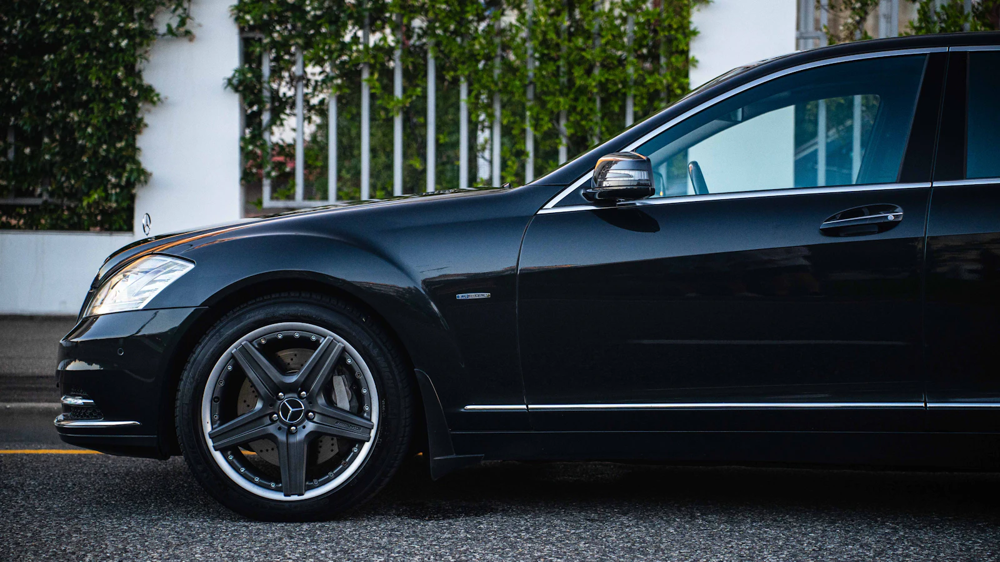
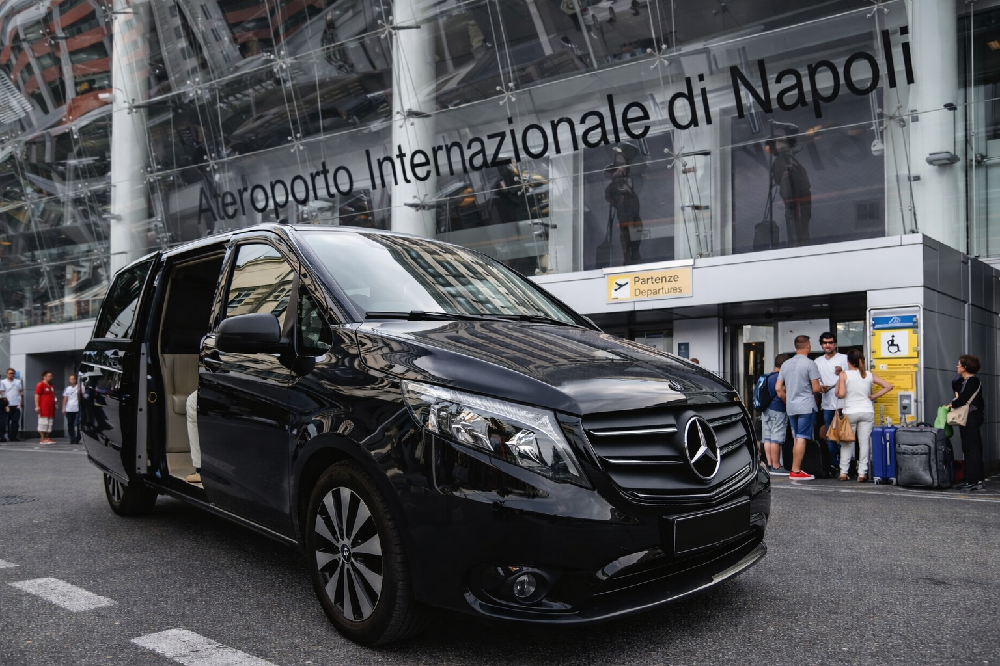
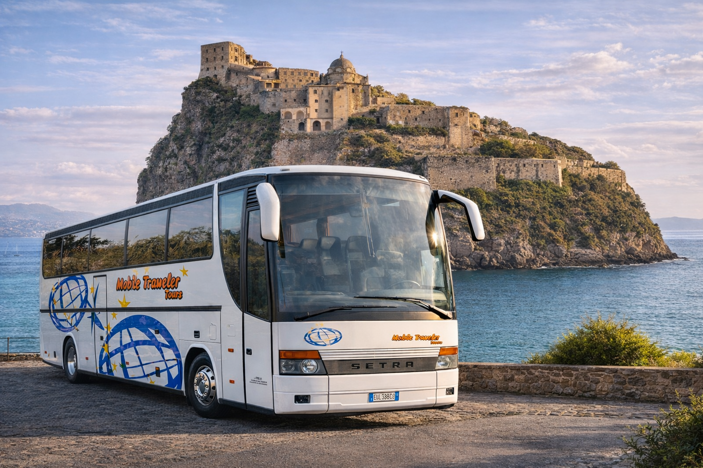

Accoglienza premium
01Transfer Porto Ischia Hotel
Accoglienza al porto e arrivo diretto in hotel o villa privata, con gestione bagagli e tempi coordinati.
Richiedi disponibilita
Dal 2006 coordiniamo arrivi e partenze verso Ischia con autisti professionali, assistenza dedicata e conoscenza reale dei tempi dell'isola.
Richiesta transfer
Risposta rapida con disponibilità e supporto dedicato in italiano e inglese.
Pagine create per intercettare ricerche ad alta intenzione: transfer Napoli Ischia, transfer porto Ischia, transfer aeroporto Napoli Ischia, transfer hotel Ischia, transfer privato e transfer per gruppi.
Soluzioni su misura per coppie, famiglie e gruppi che desiderano un servizio affidabile, elegante e senza attese.
Accoglienza premium
01Accoglienza al porto e arrivo diretto in hotel o villa privata, con gestione bagagli e tempi coordinati.
Richiedi disponibilitaAssistenza aeroportuale
02Coordinamento completo da Napoli Capodichino ai principali imbarchi per Ischia, riducendo attese e cambi stressanti.
Verifica disponibilitaArrivo in stazione
03Servizio dedicato da Napoli Centrale ai porti di partenza, perfetto per chi vuole un flusso rapido e senza imprevisti.
Scopri il servizioIslands experience
04Transfer privati per escursioni giornaliere e spostamenti tra porti, hotel e punti strategici su Capri e Procida.
Pianifica il transferCoast premium route
05Tratte premium verso Positano, Amalfi e Ravello con mezzi confortevoli e autisti esperti del territorio.
Richiedi quotazioneSupporto internazionale
06Assistenza in italiano e inglese per viaggiatori internazionali, agenzie e strutture ricettive del golfo di Napoli.
Passa alla versione ENAuto premium, minivan e autobus per coprire transfer individuali, famiglie e gruppi turistici tra aeroporti, porti e hotel.

Linea elegante, comfort elevato e guida fluida: ideale per transfer privati con standard alto.

Minivan nero elegante con spazio bagagli e massima praticità per famiglie e piccoli gruppi.

Soluzione dedicata a gruppi numerosi, eventi e viaggi organizzati con coordinamento operativo puntuale.
Dal 2006 accompagniamo viaggiatori italiani e internazionali con transfer affidabili tra aeroporto, porto e hotel.
Monitoriamo orari di arrivo e partenza per ridurre attese e ritardi.
Conosciamo porti, strade e tempi reali di Ischia e del golfo di Napoli.
Richiesta rapida da smartphone con conferma chiara e supporto dedicato.
Supporto operativo continuo per cambi orario, bagagli e logistica.
Affidabilita
Recensioni clienti
"Servizio impeccabile: arrivo in aeroporto, coordinamento porto e transfer hotel senza nessuno stress."
"Autista puntualissimo e assistenza WhatsApp sempre disponibile. Esperienza premium."
Risorse utili per verificare meteo, traghetti e arrivi volo prima del transfer.
Consulta le previsioni aggiornate prima di partire.
Apri Meteo IschiaControlla tratte da Napoli a Ischia, Capri e Procida.
Verifica gli arrivi in tempo reale per sincronizzare il transfer.
Apri Status VoliCopertura geografica tra Ischia Porto, Casamicciola, Forio, Napoli Beverello e Aeroporto di Napoli Capodichino con tratte dedicate anche per Capri, Procida e Costiera Amalfitana.
Risposte rapide per chi pianifica transfer tra aeroporto, porto e hotel nel golfo di Napoli.
Prenota un transfer privato da Napoli Capodichino al porto di Napoli Beverello, poi prosegui verso Ischia con assistenza dedicata.
Sì, il servizio collega direttamente aeroporto e terminal traghetti, riducendo attese e tempi morti.
Sì, sono disponibili transfer privati da Ischia Porto, Casamicciola e Forio verso hotel, strutture turistiche e appartamenti.
Servizio transfer attivo dal 2006 per localita turistiche, porti e aeroporti con copertura su Ischia, Capri, Procida, Napoli e Costiera Amalfitana.
booking@ischiatransferservice.com
Ischia, Capri, Procida, Napoli aeroporto, Napoli stazione, Costiera Amalfitana